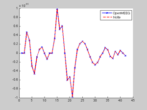

OpenMEEG for MEG from Fieldtrip demo script
This script provides an example of how to compute an MEG leadfield with OpenMEEG in the Fieldtrip toolbox.
This demo uses spherical head models and compares the OpenMEEG result with the solution provided by the solution from Nolte.
Contents
- Set the radius and conductivities of each of the compartments
- Description of the spherical mesh
- Create a set of magnetometers outside the outer surface
- Set the position of the probe dipole
- Create a BEM volume conduction model
- choose MEG implementation (Nolte, OpenMEEG)
- Plot both OpenMEEG and analytic leadfield for visual inspection
Set the radius and conductivities of each of the compartments
addpath(cd) % Make sure current folder is in the path close all clear clc % 3 Layers r = [88 92 100]; c = [1 1/80 1]; % % 2 Layers % r = [92 100]; % c = [1/4 1]; % % 1 Layers % r = [100]; % c = [1];
Description of the spherical mesh
[pnt, tri] = icosahedron42; % [pnt, tri] = icosahedron162; % [pnt, tri] = icosahedron642;
Create a set of magnetometers outside the outer surface
sens.pnt = max(r) * pnt * 1.2;
sens.ori = pnt;
sens.label = {};
nsens = size(sens.pnt, 1);
for ii=1:nsens
sens.label{ii} = sprintf('vertex%03d', ii);
end
Set the position of the probe dipole
pos = [0 0 70];
Create a BEM volume conduction model
vol = []; vol1 = []; for ii=1:length(r) vol.bnd(ii).pnt = pnt * r(ii); vol.bnd(ii).tri = tri; if (ii==1); vol1.bnd(ii).pnt = pnt * r(ii); vol1.bnd(ii).tri = tri; end end vol.cond = c; vol1.cond = c(1);
choose MEG implementation (Nolte, OpenMEEG)
% Compute the BEM cfg.method = 'openmeeg'; vol = ft_prepare_bemmodel(cfg, vol); cfg.vol = vol; cfg.grid.pos = pos; cfg.grad = sens; cfg.reducerank = 'no'; grid = ft_prepare_leadfield(cfg); lf_openmeeg = grid.leadfield{1}; % choose MEG Nolte clear cfg; cfg.method = 'nolte'; cfg.grid.pos = pos; cfg.grad = sens; vol1.type = 'nolte'; [vol1,sens] = prepare_vol_sens(vol1, sens); cfg.vol = vol1; cfg.reducerank = 'no'; grid = ft_prepare_leadfield(cfg); lf_nolte = grid.leadfield{1};
using the mesh specified in the input volume conductor
determining source compartment (1)
determining skin compartment (3)
not using the isolated source approach
using headmodel specified in the configuration
using gradiometers specified in the configuration
Warning: could be Yokogawa system
Warning: could be Yokogawa system
Warning: could be Yokogawa system
creating dipole grid based on user specified dipole positions
1 dipoles inside, 0 dipoles outside brain
calculating leadfield for all positions at once, this may take a while...
Assembling OpenMEEG DSM matrix
Elapsed time is 0.044761 seconds.
Assembling OpenMEEG H2MM and S2MM matrices
Elapsed time is 0.038352 seconds.
Warning: could be Yokogawa system
Warning: could be Yokogawa system
Warning: could be Yokogawa system
computing surface normals
Warning: Matrix is close to singular or badly scaled.
Results may be inaccurate. RCOND = 2.735165e-54.
using headmodel specified in the configuration
using gradiometers specified in the configuration
Warning: could be Yokogawa system
Warning: could be Yokogawa system
Warning: could be Yokogawa system
Warning: Matrix is close to singular or badly scaled.
Results may be inaccurate. RCOND = 2.735165e-54.
creating dipole grid based on user specified dipole positions
1 dipoles inside, 0 dipoles outside brain
computing leadfield
computing leadfield 1/1
Plot both OpenMEEG and analytic leadfield for visual inspection
figure hold on plot(lf_openmeeg(:,1),'bx-','linewidth',2) plot(lf_nolte(:,1)*1e-10,'r--','linewidth',2) hold off legend({'OpenMEEG' 'Nolte'})
